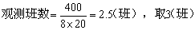

工作抽样应用实例
某饮料厂主要生产瓶装汽水、汽酒，采用流水线集体作业的生产组织形式。如何在市场经济的情况下，与同行业的企业竞争并立于不败之地，如何在不增加人力、设备的情况下，提高产品质量，增加产品产量，降低成本。
该厂邀请了专家对饮料、饴糖、精制酒等7条流水线进行了技术诊断，并运用程序分析、时间研究、工作抽样等管理方法制定了合理的劳动定员定额，明显地提高了劳动效率和经济效益，其中A汽酒、B汽水和C汽水三条生产线的定员减少了2.27%，班产量提高了36.36%。
下面以C汽水生产流水线为对象进行作业测定。
此条流水线的大部分工序属于纯机动的，少部分工序是机手并动作业。一个工序或工位只有1人看管，设备只要生产出产品就算在工作。该生产流水线的生产流程程序图如图10-8所示。用工作抽样对手工上空瓶、自动洗瓶机监视、出瓶、灯检、灌糖、灌水与扎盖、成品检验、装箱等8个工位作为观测对象。
图10
1．决定观测次数和观测时刻
经研究，规定可靠度为95%，绝对精度为±3%，相对精度为±5%。根据该厂过去的统计资料，工作比率为80%，计算正式观测次数：
规定每班观测20次，计算需观测的班数：

为了简便，采用随机起点等时间间隔法。设乱数数列为18、13、2、9、11、19、5。该厂白班作业时间从7时开始，故第一天第一次观测时刻为7时18分。
各观测时间间隔：（480min－18min）÷20＝23min则第二次为7时41分，依次类推。第二天第一次的观测时刻为7时13分，第二次为7时36分，依次类推。
2．实施观察，整理分析观测结果
按规定次数应观测三个班，现有意识地观测六个班，观测对象为8个工位，每班观测20次，共960次，其结果如表10-9所示。
表10
|
观测班次 |
每班观测次数N |
工作次数 |
工作比率(%) |
|
1 |
160 |
129 |
80.63 |
|
2 |
160 |
142 |
88.75 |
|
3 |
160 |
124 |
77.50 |
|
4 |
160 |
125 |
78.13 |
|
5 |
160 |
119 |
74.38 |
|
6 |
160 |
120 |
75.00 |
|
合 计 |
960 |
759 |
79.06 |
(1)计算管理界限，作管理图。
根据表10-9的数据，计算管理界限。
平均工作比率 =0.7906
=0.7906
管理界限=0.7906±0.0966
管理上限=0.7906+0.0966=0.8872
管理下限=0.7906-0.0966=0.6940
即管理上限为88.72%，下限为69.4%，管理图如图10-9。
图10-9 管理图
由于第二班的工作比率越出上管理界限，作为异常值剔除，再重新计算比率。
(2)检查观测次数是否合适
按±5%的相对精度，重新计算观测次数：
剔除异常值后还有观测次数800次，因此观测次数足够。
(3)计算绝对精度
按新的工作比率计算绝对精度：
绝对精度在±3%的范围内，因此观测有效。
工作抽样结束后，再应用抽样所得平均工作比率来制定流水线产量定额，为此应用秒表测时法去测试各工序的每分钟产量，结果发现各工序的能力不平衡，而流水线的产量决定于薄弱工序的能力，通过平整流水线，使产量达到81.1瓶/分。于是汽水生产线的轮班产量定额为：
480×77.13%×81.1＝30025瓶
经适当放宽，将流水线产量定额为30000瓶/班，班产量提高36.36%(原为22000瓶/班)。最后进行合理定员，配备43人，与原配备44人比较，减少了2.27%。